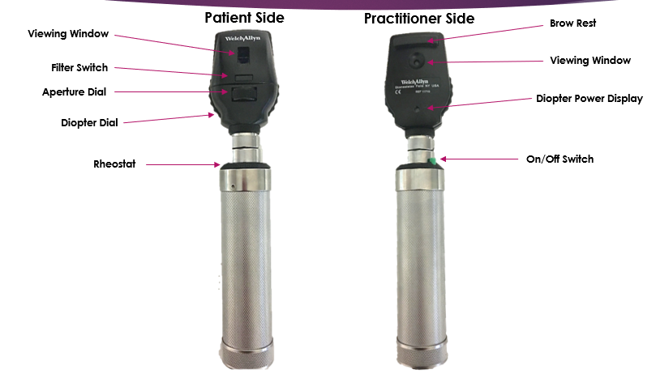

Viewing Window
The viewing window is the opening through which you look. Keep your eye close to the window while maintaining patient comfort to maximise the field of view and image quality.
A practical approach to using a direct ophthalmoscope in an OSCE.
For a visual demonstration of the technique, watch:
https://www.youtube.com/watch?v=SiuyE7w0lUc

Before performing fundoscopy, become familiar with the ophthalmoscope controls. Many difficulties stem from unfamiliarity with the instrument rather than inability to recognise pathology.
The viewing window is the opening through which you look. Keep your eye close to the window while maintaining patient comfort to maximise the field of view and image quality.
The rheostat controls brightness. Increase light until the fundus is clear but avoid causing patient discomfort — small adjustments often work better than large jumps.
Use the diopter dial to focus. Start at 0 diopters and rotate as you approach the retina until structures are sharp. Focus changes are usually the reason for a blurred view.
The aperture changes the beam shape and size. A standard circular aperture is typical; smaller apertures help with small pupils and larger apertures give a wider view for dilated pupils.
Filters (eg. red-free/green) can enhance vessel and haemorrhage visibility. Awareness of filters is useful, though not required for basic undergraduate examinations.
Use the brow rest to stabilise the instrument. Stability reduces motion artefact and makes it easier to maintain a steady, focused view.
If the retina looks blurred, follow this short routine:
Small repeated adjustments usually produce a better view than constant repositioning.
Master the instrument first: viewing window, rheostat, aperture, filters and diopter dial — this foundation makes identifying retinal pathology far easier.